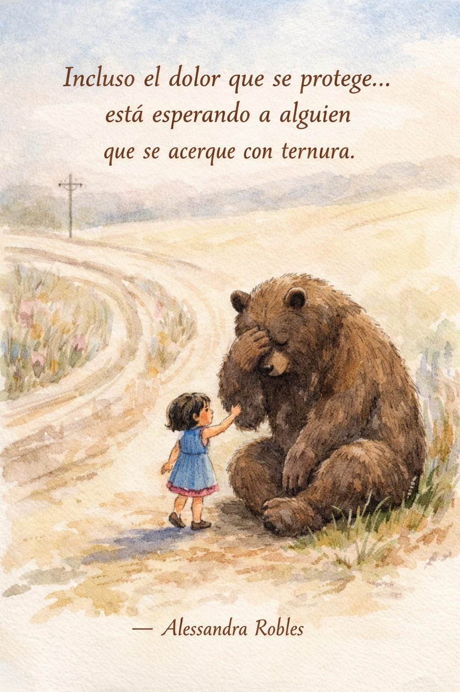

Un espacio seguro donde puedes sentir, expresar y reconstruirte a tu propio ritmo.
Comenzar mi procesoSi estás atravesando una pérdida o un cambio importante en tu vida, no tienes que hacerlo solo.

Fallecimiento de un ser querido

Enfermedad terminal o degenerativa

Separación o divorcio

Pérdida laboral

Crisis existenciales o búsqueda de sentido

Gestión emocional en momentos difíciles
Este espacio está pensado para que puedas sentirte en confianza, acompañado y libre de juicio en cada parte de tu proceso.
Aquí puedes expresarte libremente, sin presión y a tu propio ritmo.
No hay una forma correcta de vivir lo que sientes. Todo lo que experimentas es válido.
A través de escucha activa y herramientas terapéuticas, damos sentido a lo que estás viviendo.
No tienes que forzarte a nada. Se trata de caminar tu proceso acompañado.
Te explico cómo es tener una sesión conmigo, paso a paso y a tu ritmo 🤍
Comenzamos con un espacio donde puedes compartir lo que estás viviendo, sin presión y con total libertad.
Se da lugar a tus emociones, validando lo que sientes desde la empatía y el respeto.
Utilizamos herramientas que te ayuden a entender, expresar y procesar lo que estás viviendo.
Poco a poco, damos sentido a lo que estás viviendo y avanzamos a tu propio ritmo.

Antes de ser profesionista en la salud mental, soy una mujer con una historia de vida que me ha enseñado a sentir profundamente, a perder, a reconstruirme y a encontrar sentido incluso en los momentos más difíciles.
Soy amante de los pequeños detalles que abrazan el alma: las series coreanas, la magia de la Navidad y el arte de hacer postres que llenan el corazón.
He atravesado pérdidas dolorosas que marcaron mi camino. Y fue justamente al transitar mi propio duelo que nació en mí el deseo de acompañar a otros.
Soy Licenciada en Psicología, especialista en Tanatología Humanista, con formación en Logoterapia, Psicooncología y más.
Hoy, mi propósito es acompañarte a transitar tus pérdidas y reconstruirte a tu propio ritmo.
Un lugar seguro, tranquilo y pensado para que puedas sentirte en confianza.
Consultorio en Toluca 🤍


A veces, una frase puede abrazar lo que sientes 🤍



Puedes elegir la forma en la que te sientas más cómodo para iniciar tu proceso 🤍

Puedes tomar tu proceso desde la comodidad de tu espacio, en un ambiente seguro y confidencial.

Las sesiones se llevan a cabo en consultorio en Toluca, dentro de un espacio tranquilo y adecuado para tu proceso.
Si sientes que es momento de hablar o iniciar tu proceso, puedes escribirme con confianza 🤍
Tu mensaje será recibido con respeto y total confidencialidad 🤍